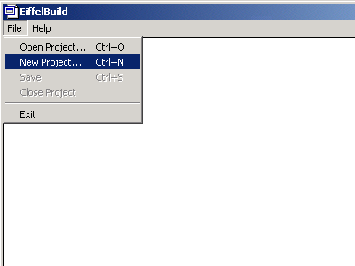
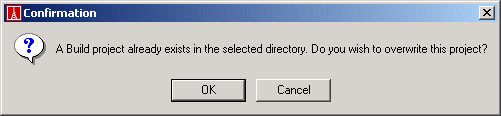

When a project is not open in Build, there are only two menu options available. 'File' and 'Help'. To create a new project, select 'file', 'New project' as illustrated below:

This will bring up a directory dialog from which you can select the directory in which you wish to create the new Build project.
Selecting a directory that does not already contain a Build project will create a new project in that directory and the Build tools will become available for development of the newly created project. If a directory was selected that already contains a Build project, the following dialog will be displayed:

Selecting 'Ok' will create a new project, overwriting the existing project, and the Build tools will become available for development of the newly created project.
Selecting 'Cancel' will return you to the directory selection dialog, from which you can select the directory in which you wish to create the new Build project.